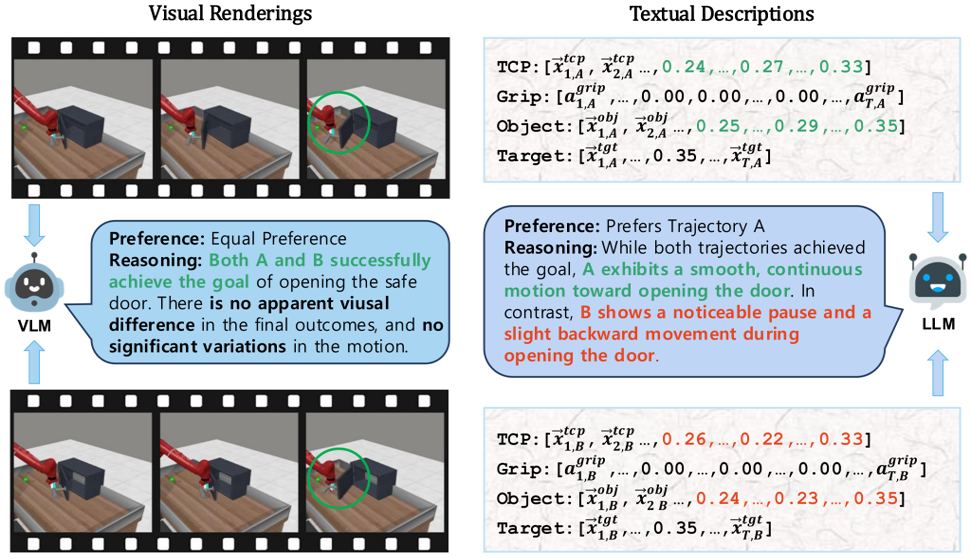
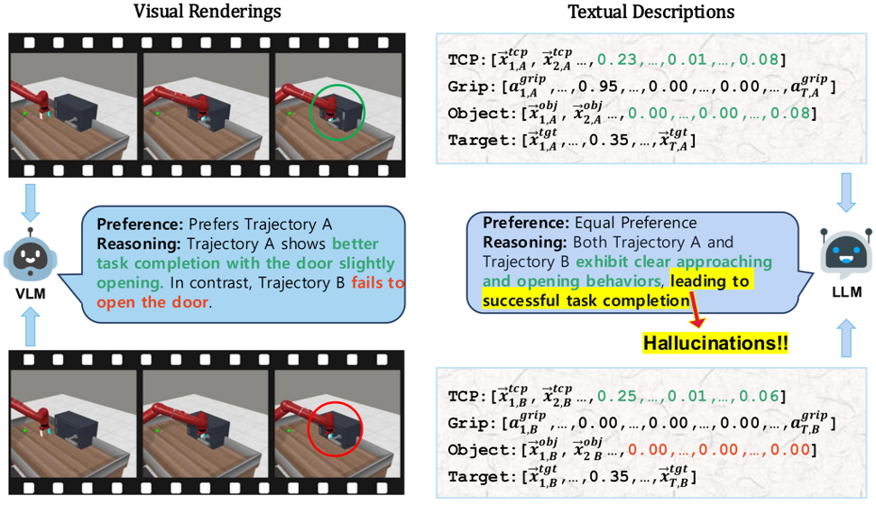

Motivation
Preference-based RL offers an alternative to hand-designed rewards by learning from comparative feedback; yet its reliance on human labels prevents scalability. Our goal is to enable scalable, zero-shot PbRL with foundation models (FMs). We identify three critical challenges in existing preference-based RL frameworks:
1. Limitations of Single-Modality Synthetic Feedback

Vision-based reasoning → reliable spatial grounding and goal-state assessment, but limited ability to interpret temporal progression or subtle motion dynamics.

Text-centric analysis → good temporal and logical reasoning, but often hallucinate or miss fine-grained spatial interactions and key events.
2. Query Ambiguity in Early Training

Early trajectories from random policies are uniformly low quality, lacking meaningful task variations → cannot provide informative comparisons.
3. Preference Credit Assignment Uncertainty

Preferences are given at trajectory level, but reward models operate at state-action level → hard to determine which steps caused the preference.